Tailler les pierres, extraire des outils
Il y a quelques années, dans la maison de mes grands-parents maternels, je suis tombée sur un livre de géographie des années 70 qui appartenait à ma mère ou à ses frères et sœurs.
Les photos présentes illustraient les différents pays d’Europe, leurs économies et les singularités de chaque régions. Un livre qui me donnait accès à une représentation fantasmée de ces territoires éloignés.
Aussi fascinée que ces auteur·rices, j’ai commencé une collecte des textures organiques et minérales, des montagnes, des plaines, des rivières, des ciels et des frontières naturelles, la matière première d’un vocabulaire graphique, toujours en cours d’élaboration.
"Tailler les pierres, extraire les outils", 2018 - 2022, photographies, dimensions diverses
 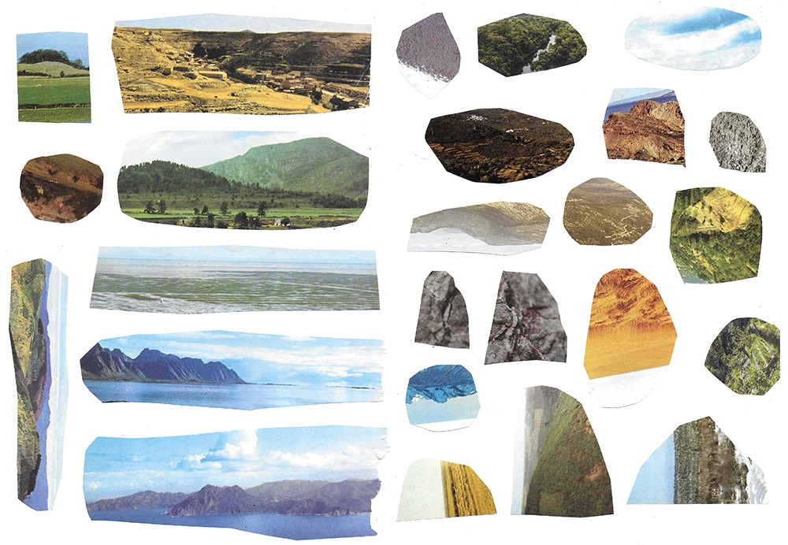
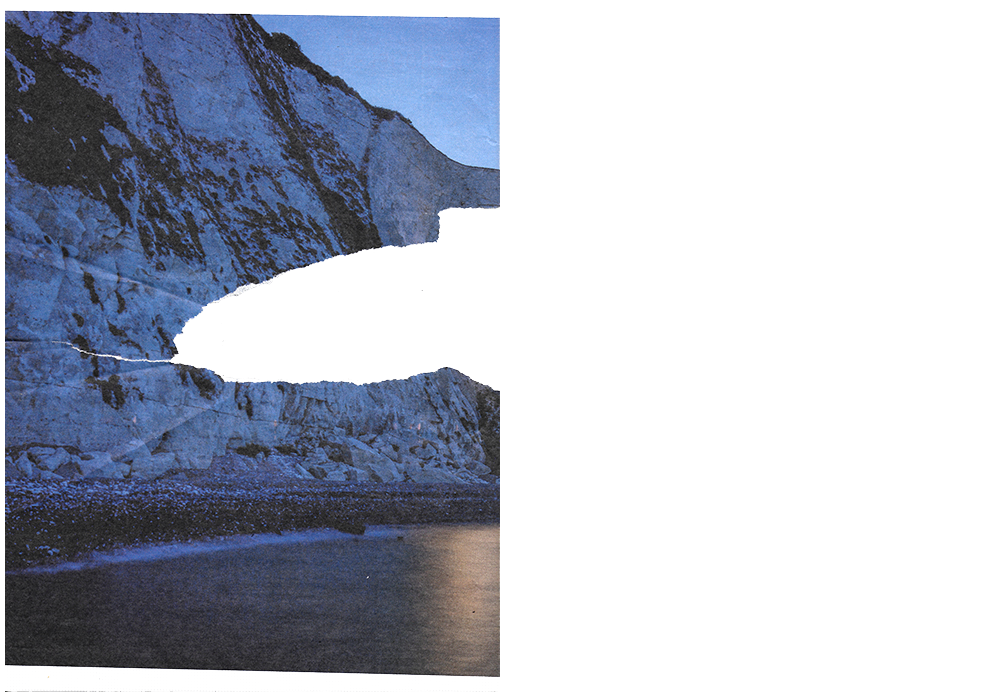
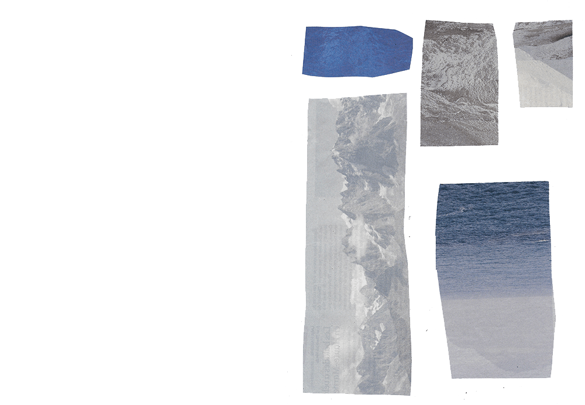
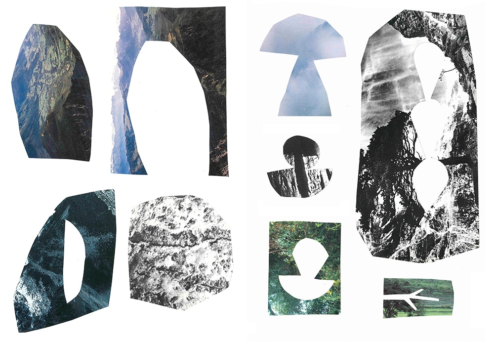
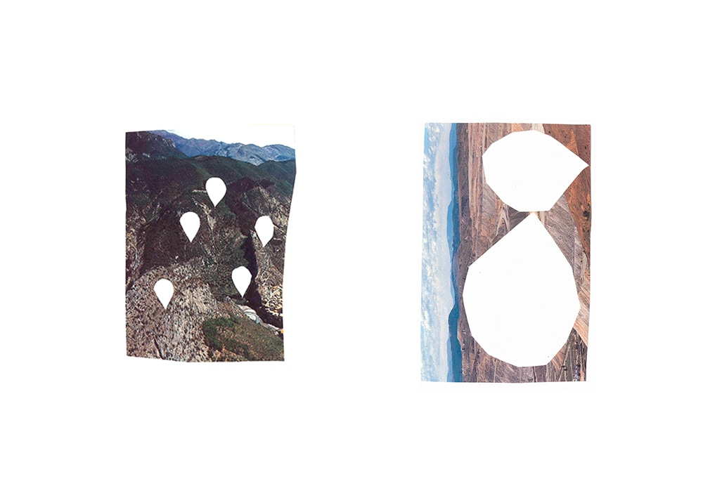
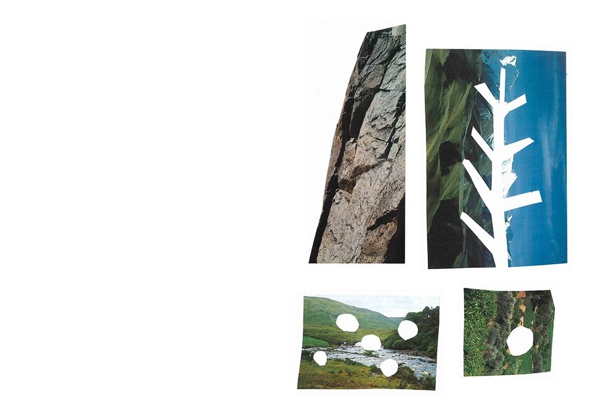
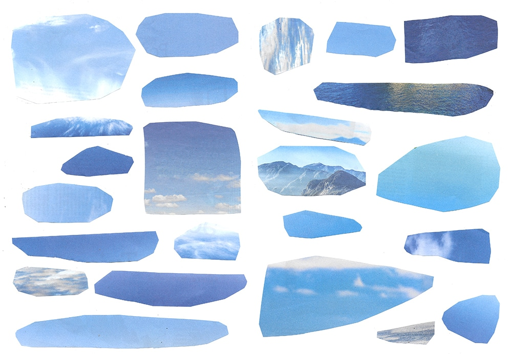
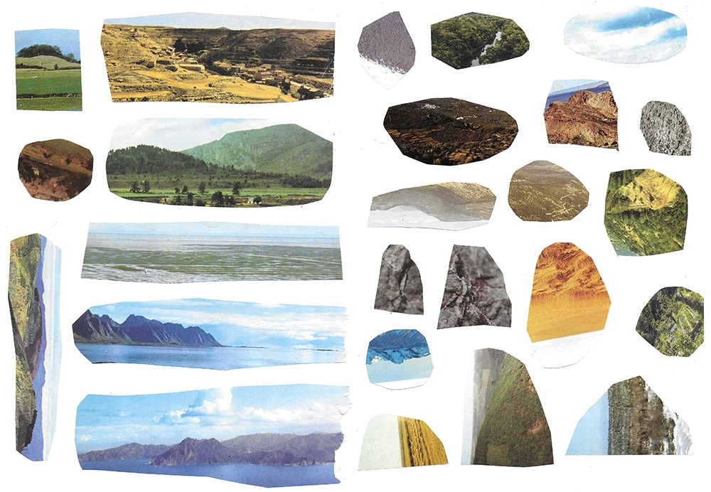
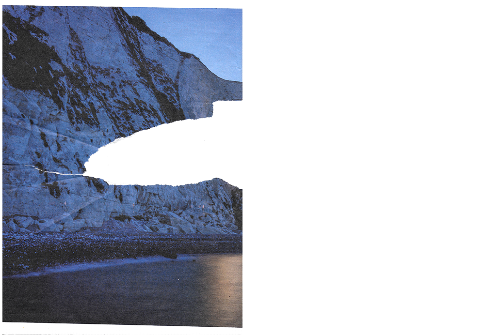
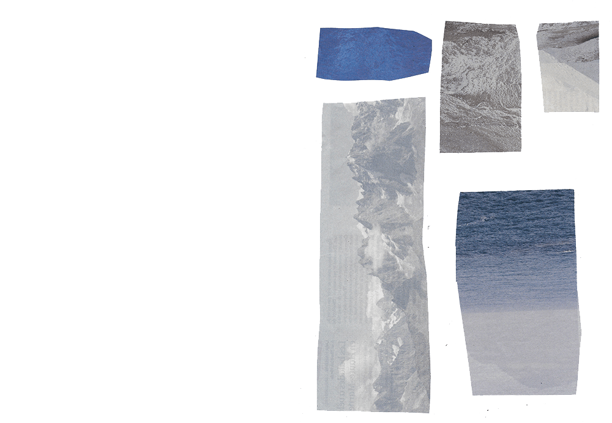
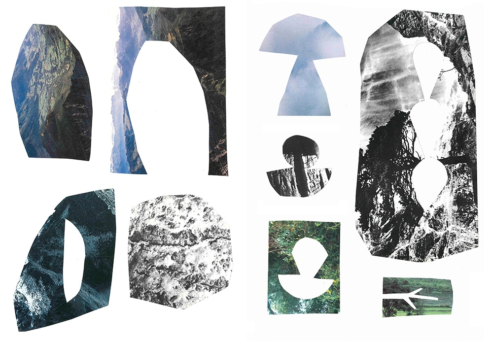
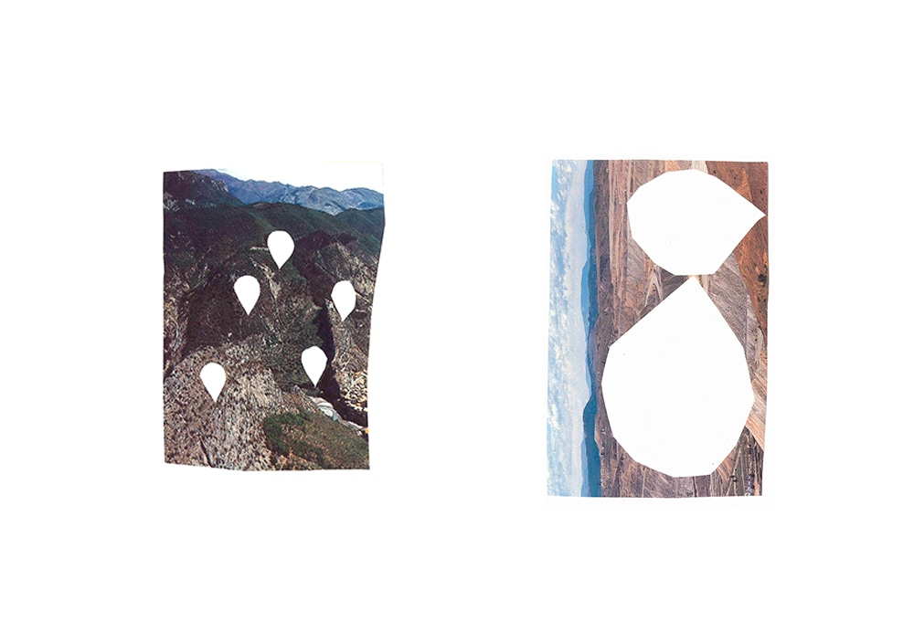
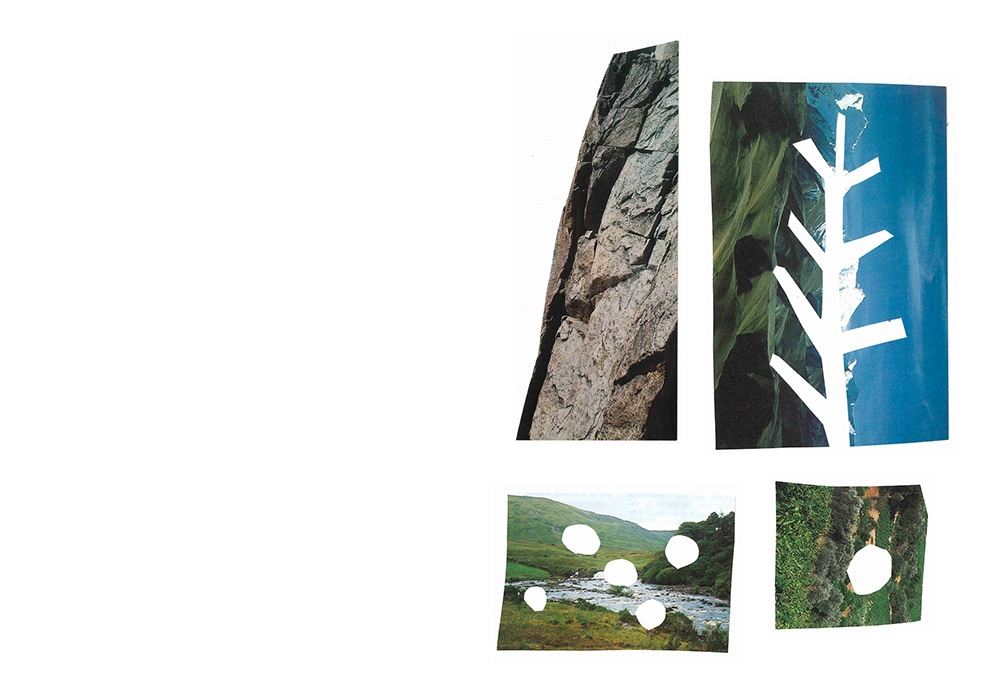
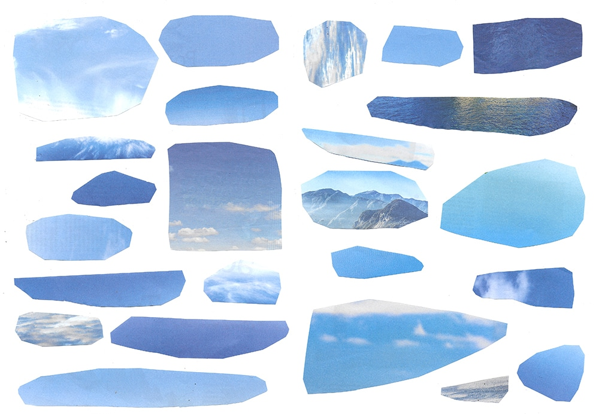